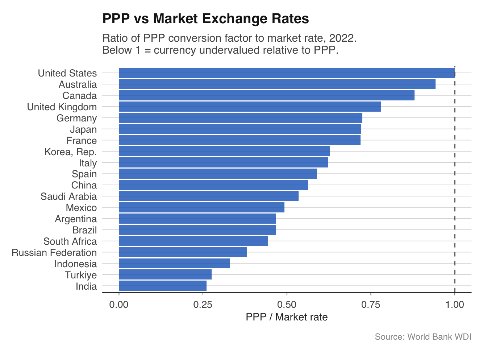
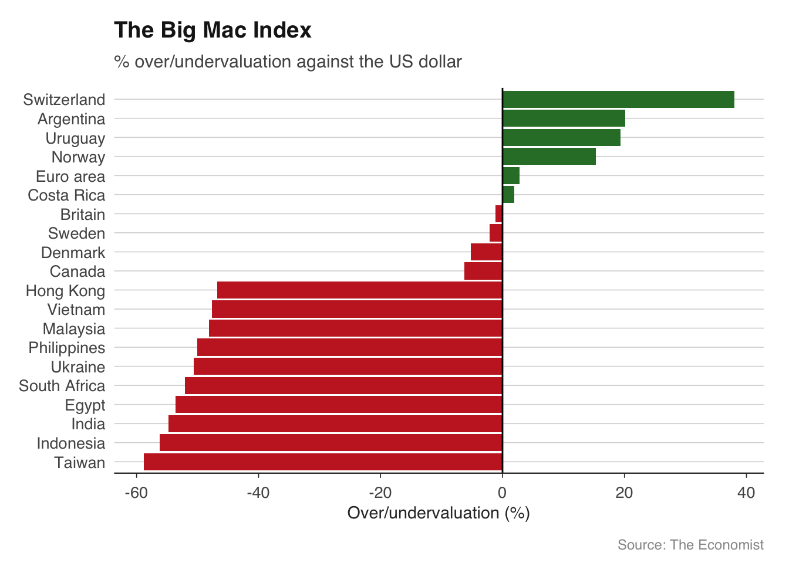

library(WDI)
library(ggplot2)
library(dplyr)
source("../R/theme_macro.R")
# PPP conversion factor (GDP) and official exchange rate
# PA.NUS.PPP = PPP conversion factor, GDP (LCU per international $)
# PA.NUS.FCRF = Official exchange rate (LCU per US$, period average)
g20_codes <- c("US", "GB", "DE", "FR", "JP", "CA", "AU", "KR",
"BR", "IN", "CN", "MX", "ID", "TR", "ZA", "SA",
"AR", "RU", "IT", "ES")
ppp_data <- WDI(
country = g20_codes,
indicator = c("PA.NUS.PPP", "PA.NUS.FCRF"),
start = 2022, end = 2022
)
ppp_data <- ppp_data |>
rename(ppp_rate = PA.NUS.PPP,
market_rate = PA.NUS.FCRF) |>
mutate(ppp_ratio = ppp_rate / market_rate) |>
filter(!is.na(ppp_ratio))12 Exchange Rates and Trade
Exchange rates transmit monetary policy, reflect relative economic prospects, and reshape trade flows. This chapter covers purchasing power parity, real effective exchange rates, the Big Mac Index, and gravity models of trade. Along the way, we will pull data from the World Bank, BIS, OECD, and the Economist’s open dataset.
12.1 Purchasing power parity
Purchasing power parity (PPP) is one of the oldest ideas in international economics. It starts from the law of one price: if markets are competitive and transport costs are small, the same good should cost the same everywhere once you convert currencies. A tonne of wheat that costs $200 in the United States should cost £160 in the UK when the exchange rate is 1.25 dollars per pound. If wheat were cheaper in the UK, arbitrageurs would buy it there and sell it in the US, driving prices to equality.
Extend this logic from a single good to the entire price level and you get PPP. The PPP exchange rate is the rate that equalises the price of a representative basket of goods across countries:
\[ e^{PPP} = \frac{P}{P^*} \]
where \(P\) is the domestic price level and \(P^*\) is the foreign price level. If a basket costs £80 in the UK and $100 in the US, the PPP exchange rate is 0.80 pounds per dollar.
In practice, PPP holds poorly in the short run. Market exchange rates fluctuate wildly — driven by capital flows, interest rate differentials, and speculation — while price levels are sticky. But over decades, currencies do tend to converge towards their PPP values. The “Penn effect” also shows that PPP exchange rates systematically differ from market rates in a predictable way: currencies in poorer countries tend to be undervalued relative to PPP, because non-traded services (haircuts, restaurant meals) are cheap in low-wage economies. This is the Balassa-Samuelson effect.
The World Bank publishes PPP conversion factors through its World Development Indicators, which we can access using the WDI package.
# Plot the ratio of PPP to market exchange rates
# A ratio below 1 means the currency is "undervalued" vs PPP
# A ratio above 1 means "overvalued"
ggplot(ppp_data, aes(x = reorder(country, ppp_ratio), y = ppp_ratio)) +
geom_col(fill = "#1565C0", alpha = 0.8) +
geom_hline(yintercept = 1, linetype = "dashed", colour = "grey40") +
coord_flip() +
labs(title = "PPP vs Market Exchange Rates",
subtitle = "Ratio of PPP conversion factor to market rate, 2022.\nBelow 1 = currency undervalued relative to PPP.",
x = NULL, y = "PPP / Market rate",
caption = "Source: World Bank WDI") +
theme_macro()
The pattern is striking. Currencies in emerging markets — India, Indonesia, South Africa, Turkey — are well below PPP, with ratios of 0.2 to 0.5. This means that a dollar buys two to five times as many goods in these countries as the market exchange rate alone would suggest. Advanced economy currencies cluster near 1, with some (Switzerland, the Nordics) typically above. The United States is the benchmark, so its ratio is 1 by construction.
This has important practical implications. When you compare GDP across countries at market exchange rates, you understate the living standards of poorer countries. China’s GDP at market exchange rates is roughly two-thirds of the US; at PPP, it is arguably larger. The IMF and World Bank therefore publish GDP figures at both market rates and PPP rates, and you should be clear about which you are using.
12.2 Real effective exchange rates
A country does not trade with just one partner, so a bilateral exchange rate — sterling against the dollar, say — tells only part of the story. The real effective exchange rate (REER) is a trade-weighted, inflation-adjusted index that captures a country’s price competitiveness against all of its trading partners simultaneously.
The REER is constructed in two steps. First, take a basket of bilateral exchange rates, weighted by each partner’s share of trade. This gives the nominal effective exchange rate (NEER). Second, adjust for relative inflation: if UK prices are rising faster than its trading partners’ prices, the UK is losing competitiveness even if the nominal exchange rate is unchanged. The REER captures this.
\[ \text{REER} = \text{NEER} \times \frac{P_{\text{domestic}}}{P_{\text{foreign}}^{*}} \]
A rising REER means a country is becoming less price-competitive — its goods are getting more expensive relative to those of its trading partners. A falling REER means the opposite. Central banks and treasuries monitor the REER closely because sustained misalignment can cause large trade imbalances.
The Bank for International Settlements (BIS) and the OECD both publish REER indices. We can use the readoecd package to pull the OECD’s version.
library(readoecd)
# OECD publishes REER data in the MEI database
# The readoecd package provides high-level functions for common datasets.
# For REER data, you can use the OECD Data Explorer directly:
# https://data-explorer.oecd.org/
# Download as CSV and read into R, or use the OECD API directly.
#
# reer <- read.csv("data/oecd-reer-gbr.csv")
# head(reer)# Plot the UK REER over time
reer_uk <- reer |>
filter(date >= as.Date("2000-01-01"))
ggplot(reer_uk, aes(x = date, y = value)) +
geom_line(colour = "#00695c", linewidth = 0.7) +
geom_vline(xintercept = as.Date("2016-06-23"),
linetype = "dashed", colour = "grey40") +
annotate("text", x = as.Date("2016-06-23"), y = max(reer_uk$value) * 0.95,
label = "Brexit\nreferendum", hjust = -0.1,
size = 3, colour = "grey40") +
labs(title = "UK Real Effective Exchange Rate",
subtitle = "CPI-based, index (2015 = 100)",
x = NULL, y = NULL,
caption = "Source: OECD MEI") +
theme_macro()The chart typically shows a sharp depreciation after the Brexit referendum in June 2016. Sterling fell roughly 10% on a trade-weighted basis almost overnight — one of the largest peacetime currency moves for a major economy. The REER has remained below its pre-referendum level since, reflecting a structural repricing of the UK’s economic prospects. This depreciation boosted the competitiveness of UK exports in principle, but the trade balance did not improve materially, partly because imports became more expensive (the UK is a net importer of food and energy) and partly because non-price factors — supply chain disruption, regulatory uncertainty — offset the price advantage.
It is instructive to compare the UK REER to those of other economies. Countries that run persistent current account surpluses (Germany, Japan) tend to have REERs that are low relative to fundamentals, while deficit countries tend to have overvalued REERs.
# Compare REERs across major economies
# Download REER data from the OECD Data Explorer for multiple countries
# reer_multi <- read.csv("data/oecd-reer-multi.csv") |>
# filter(date >= as.Date("2000-01-01"))
#
# ggplot(reer_multi, aes(x = date, y = value, colour = country)) +
# geom_line(linewidth = 0.6) +
# labs(title = "Real Effective Exchange Rates",
# subtitle = "CPI-based, index (2015 = 100)",
# x = NULL, y = NULL, colour = NULL,
# caption = "Source: OECD MEI") +
# theme_macro() +
# theme(legend.position = "bottom")12.3 The Big Mac Index
The Economist’s Big Mac Index is the world’s most digestible (pun intended) test of purchasing power parity. The idea is simple: a Big Mac is a standardised product sold in over 100 countries. If PPP held, a Big Mac should cost the same everywhere after converting currencies. In practice, it does not — and the deviations are informative.
The raw Big Mac Index takes the price of a Big Mac in each country’s local currency, converts it to dollars at the market exchange rate, and compares it to the US price. If a Big Mac costs £3.69 in Britain and $5.58 in the US, the implied PPP rate is \(3.69 / 5.58 = 0.66\) pounds per dollar. If the actual exchange rate is 0.80, sterling is overvalued by about 21% relative to “Big Mac PPP.”
The Economist publishes the underlying data as a CSV on GitHub, making it easy to work with in R.
date iso_a3 currency_code name local_price dollar_ex
1 2000-04-01 ARG ARS Argentina 2.50 1.00
2 2000-04-01 AUS AUD Australia 2.59 1.68
3 2000-04-01 BRA BRL Brazil 2.95 1.79
4 2000-04-01 CAN CAD Canada 2.85 1.47
5 2000-04-01 CHE CHF Switzerland 5.90 1.70
6 2000-04-01 CHL CLP Chile 1260.00 514.00
dollar_price USD_raw EUR_raw GBP_raw JPY_raw CNY_raw GDP_bigmac adj_price
1 2.500000 0.11607 0.05007 -0.16722 -0.09864 1.09091 8317.725 1.941077
2 1.541667 -0.31176 -0.35246 -0.48645 -0.44416 0.28939 28023.744 2.287635
3 1.648045 -0.26427 -0.30778 -0.45102 -0.40581 0.37836 4511.789 1.874144
4 1.938776 -0.13448 -0.18566 -0.35417 -0.30099 0.62152 24539.929 2.226367
5 3.470588 0.54937 0.45774 0.15609 0.25130 1.90267 23524.313 2.208506
6 2.451362 0.09436 0.02964 -0.18342 -0.11618 1.05023 4480.579 1.873595
USD_adjusted EUR_adjusted GBP_adjusted JPY_adjusted CNY_adjusted
1 0.36397 NA -0.07809 0.09763 0.96247
2 -0.28631 NA -0.51761 -0.42567 0.02686
3 -0.06873 NA -0.37055 -0.25058 0.33990
4 -0.07777 NA -0.37666 -0.25785 0.32689
5 0.66423 NA 0.12486 0.33926 1.39447
6 0.38561 NA -0.06346 0.11504 0.99360# Horizontal bar chart of over/undervaluation
# Select a subset for readability
top_bottom <- bind_rows(
head(latest, 10),
tail(latest, 10)
)
ggplot(top_bottom,
aes(x = reorder(name, overvaluation), y = overvaluation)) +
geom_col(aes(fill = overvaluation > 0), show.legend = FALSE) +
scale_fill_manual(values = c("#c62828", "#2e7d32")) +
geom_hline(yintercept = 0, linewidth = 0.5) +
coord_flip() +
labs(title = "The Big Mac Index",
subtitle = "% over/undervaluation against the US dollar",
x = NULL, y = "Over/undervaluation (%)",
caption = "Source: The Economist") +
theme_macro()
The chart reveals a familiar pattern. Swiss francs and Norwegian kroner are typically the most overvalued — Big Macs in Zurich cost nearly twice the US price. At the other end, currencies in South-East Asia and parts of Latin America are heavily undervalued. A Big Mac in India or Egypt costs a fraction of the US price even after converting at market exchange rates.
The Big Mac Index has its limitations. McDonald’s pricing reflects local costs (rent, wages, beef prices) and local market power, not just currency misalignment. The adjusted index controls for GDP per capita — the Balassa-Samuelson effect — and tends to show smaller deviations, but they remain substantial for many currencies.
# Implied PPP rate vs actual exchange rate
latest_ppp <- bigmac |>
filter(date == max(date)) |>
filter(!is.na(dollar_price), !is.na(local_price)) |>
mutate(
implied_ppp = local_price / dollar_price[iso_a3 == "USA"],
actual_rate = local_price / dollar_price
) |>
select(name, iso_a3, local_price, dollar_price, implied_ppp, actual_rate)
head(latest_ppp, 15) name iso_a3 local_price dollar_price implied_ppp
1 United Arab Emirates ARE 18.00 4.900760 3.1088083
2 Argentina ARG 7300.00 6.952380 1260.7944732
3 Australia AUS 7.75 4.870488 1.3385147
4 Azerbaijan AZE 6.24 3.670588 1.0777202
5 Bahrain BHR 1.70 4.509284 0.2936097
6 Brazil BRA 23.90 4.025806 4.1278066
7 Canada CAN 7.81 5.429455 1.3488774
8 Switzerland CHE 7.20 7.992452 1.2435233
9 Chile CHL 4490.00 4.547987 775.4749568
10 China CHN 25.50 3.518285 4.4041451
11 Colombia COL 21900.00 5.174589 3782.3834197
12 Costa Rica CRI 2990.00 5.901801 516.4075993
13 Czech Republic CZE 109.00 4.562235 18.8255613
14 Denmark DNK 39.00 5.487007 6.7357513
15 Egypt EGY 135.00 2.686567 23.3160622
actual_rate
1 3.672900
2 1050.000100
3 1.591216
4 1.700000
5 0.377000
6 5.936700
7 1.438450
8 0.900850
9 987.250000
10 7.247850
11 4232.220000
12 506.625000
13 23.891800
14 7.107700
15 50.250000Despite its informality, the Big Mac Index captures something real. Currencies that are significantly undervalued on the Big Mac measure do tend to appreciate over the following decade, consistent with long-run mean reversion to PPP. It is not a trading strategy — the convergence is far too slow for that — but it is a useful heuristic for whether a currency is cheap or expensive by historical standards.
12.4 Gravity models of trade
Why does Germany trade more with France than with Australia? Why does Canada’s largest trading partner the United States rather than China, despite China’s larger economy? The gravity model of trade provides the answer: bilateral trade flows are proportional to economic size and inversely proportional to distance, just like Newton’s law of gravitation.
The gravity equation is:
\[ \ln(\text{Trade}_{ij}) = \beta_0 + \beta_1 \ln(\text{GDP}_i) + \beta_2 \ln(\text{GDP}_j) + \beta_3 \ln(\text{Distance}_{ij}) + \varepsilon_{ij} \]
where \(\text{Trade}_{ij}\) is the value of trade between countries \(i\) and \(j\), \(\text{GDP}_i\) and \(\text{GDP}_j\) are their economic sizes, and \(\text{Distance}_{ij}\) is the geographic distance between them (usually measured between capital cities or economic centres). The model predicts that larger economies trade more (\(\beta_1, \beta_2 > 0\)) and more distant economies trade less (\(\beta_3 < 0\)).
The gravity model is one of the most empirically successful models in economics. In its basic form, it explains around 60-70% of the variation in bilateral trade flows. Adding further variables — common language, colonial history, shared borders, regional trade agreements — pushes the \(R^2\) higher still. The finding that EU membership roughly doubles bilateral trade (controlling for size and distance) was central to the economic analysis of Brexit.
For estimation, we use the CEPII gravity dataset, which provides bilateral trade flows along with geographic and cultural variables for nearly all country pairs. The fixest package provides fast fixed-effects estimation, which is essential given the large number of observations.
# Basic gravity model
# Trade is typically measured as exports from i to j
# Filter for a single year and non-zero trade flows
gravity_2019 <- gravity |>
filter(year == 2019, trade > 0) |>
mutate(
ln_trade = log(trade),
ln_gdp_o = log(gdp_o),
ln_gdp_d = log(gdp_d),
ln_dist = log(dist)
)
# OLS gravity equation
gravity_ols <- feols(
ln_trade ~ ln_gdp_o + ln_gdp_d + ln_dist +
contig + comlang_off + colony + rta,
data = gravity_2019
)
summary(gravity_ols)The coefficient on log distance is typically around \(-1.1\) to \(-1.3\), meaning a doubling of distance reduces trade by about 55-60%. The coefficients on GDP are close to 1, consistent with the theoretical prediction. Sharing a border (contig) increases trade by roughly 50-80%, sharing an official language by 30-50%, and having a colonial relationship by 40-60%. Regional trade agreements (rta), which include EU membership, roughly double trade.
A more sophisticated specification includes exporter and importer fixed effects, which control for all country-specific factors (GDP, institutions, remoteness) and isolate the effect of bilateral variables like distance.
# Gravity model with exporter and importer fixed effects
gravity_fe <- feols(
ln_trade ~ ln_dist + contig + comlang_off + colony + rta |
iso_o + iso_d,
data = gravity_2019
)
summary(gravity_fe)# Compare the two specifications
etable(gravity_ols, gravity_fe,
headers = c("OLS", "Fixed Effects"),
title = "Gravity Model Estimates")The fixed-effects specification is the modern standard. Once you include country fixed effects, the GDP variables drop out (they are perfectly collinear with the fixed effects), but the bilateral variables — distance, common language, colonial ties — remain. Their coefficients are typically somewhat smaller than in the OLS specification, because the fixed effects absorb some of the correlation.
For the UK specifically, the gravity model provides a framework for quantifying the trade effects of Brexit. Before the referendum, studies using gravity models estimated that EU membership boosted UK trade with EU partners by 40-100%. Leaving the single market and customs union would be expected to reduce this premium, with the magnitude depending on the depth of the future trading relationship. Early post-Brexit data suggest a significant decline in UK-EU trade relative to the gravity model’s predictions, though disentangling Brexit from COVID-19 effects remains an active area of research.
# Illustrate the gravity relationship visually
# Plot log trade against log distance
ggplot(gravity_2019 |> sample_n(5000),
aes(x = ln_dist, y = ln_trade)) +
geom_point(alpha = 0.15, size = 0.8, colour = "#37474f") +
geom_smooth(method = "lm", colour = "#d32f2f", se = FALSE) +
labs(title = "The Gravity of Trade",
subtitle = "Bilateral trade flows vs distance, 2019",
x = "Log distance (km)", y = "Log trade (US$)",
caption = "Source: CEPII Gravity Database") +
theme_macro()12.5 Exercises
Using
readecb::ecb_exchange_rate(), download the EUR/GBP rate since the Brexit referendum (June 2016). Identify the three largest single-day moves.Download PPP-adjusted GDP per capita from the World Bank for the G20. How does the ranking differ from market exchange rate GDP per capita?
Download the Big Mac Index data from the Economist’s GitHub. Plot the implied PPP exchange rate against the actual exchange rate for the latest available date. Which currencies sit furthest from the 45-degree line?
Estimate a gravity model for 2019 using the CEPII dataset. What is the elasticity of trade with respect to distance? How much does a common language boost trade?
Add a dummy variable for EU membership to the gravity model. How much does EU membership increase bilateral trade? Is the coefficient statistically significant?